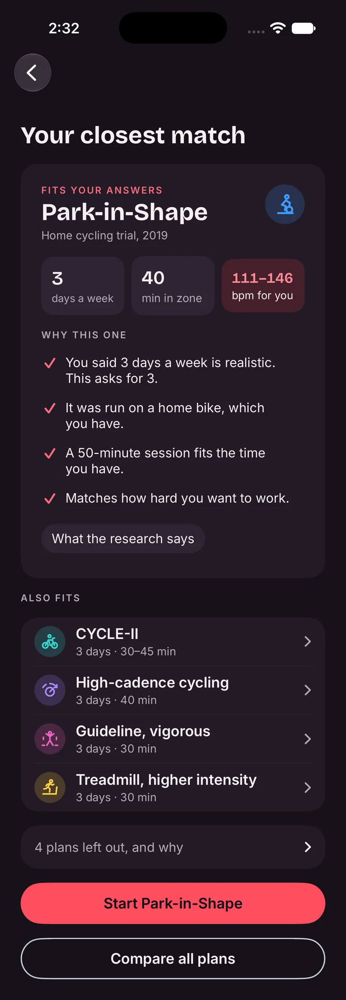
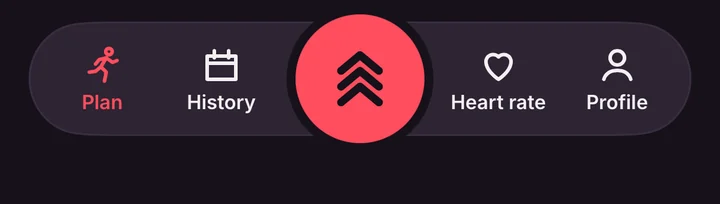
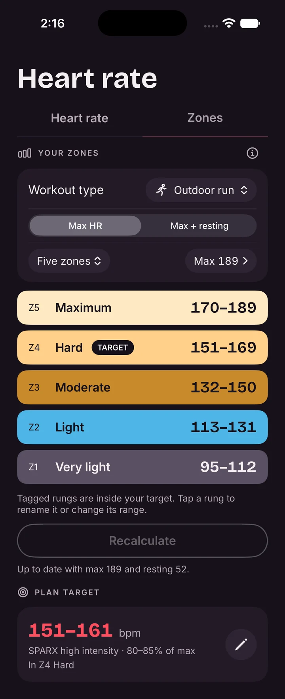
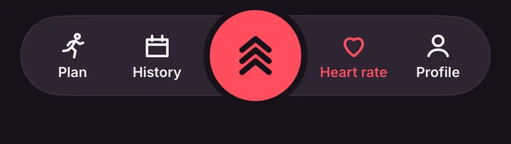
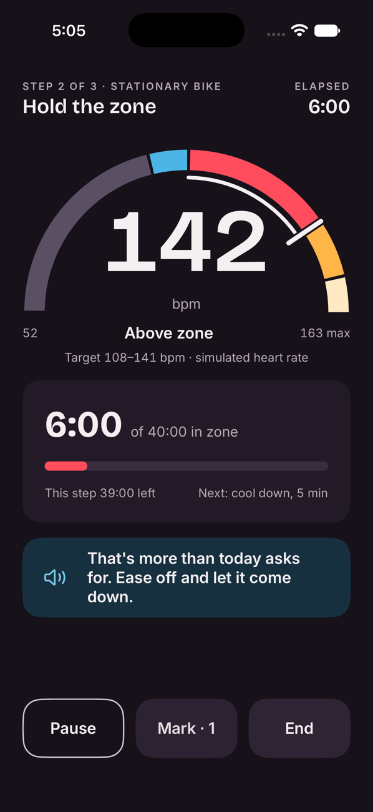
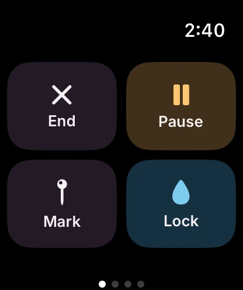
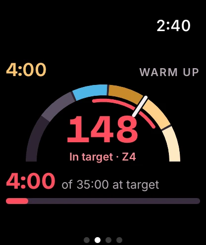
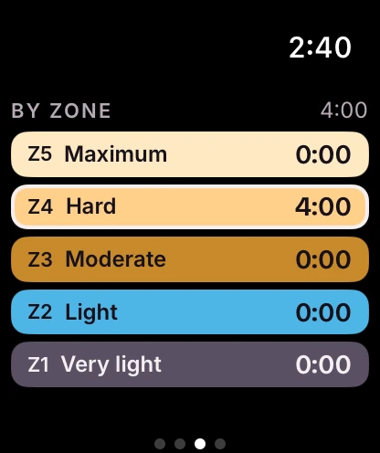
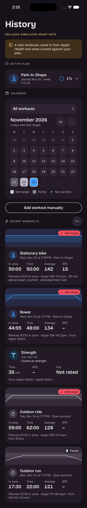
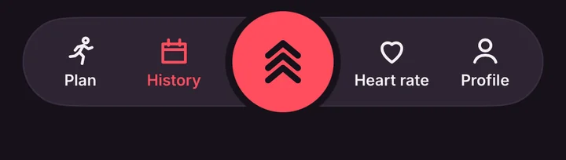

Exercise for Parkinson's
Exercise trials, turned into a plan you can follow.
PDZone asks five questions, matches you to a published exercise protocol, sets your heart-rate target from your own numbers, and tracks whether each workout met it. On iPhone and Apple Watch.
In private testing. Not yet on the App Store.
A plan for you
Five questions land you on a published protocol.
What you do now, the equipment you have, your days, your time, and how hard you want to work. PDZone shows the protocol that fits and says why, or lets you compare every plan with your own target on each.
Each plan shows its study: who was in it, what it found, and what it didn't.


Your target
Zones from your own numbers.
Set your max heart rate from a test, a past workout or a formula built for Parkinson's, and your resting rate from Apple Health. The target is different for the rower than for the treadmill, because your heart rate is.


During the workout
A dial shows where you are. Coaching says what to change.
One tap starts today's session. The dial draws your own zones with the plan's target as a red band, and the number turns red when you are at or above it. Below, one figure counts the minutes that score, and a ladder shows the minutes in each zone. Short spoken prompts tell you to pick it up, hold, or ease off.

On the watch
The same dial on your wrist.
The watch runs the session by itself, with the same dial, a page of minutes in each zone, and a page of controls a swipe away. It records the workout to Apple Health and sends the result back to the phone.



Credit for what you already do
Record with whatever you use.
If Strava, Garmin, Peloton, WHOOP or your watch saves a workout to Apple Health, PDZone reads its heart rate and scores it against the plan you were following that day. It happens when you open the app. There is nothing to type in.
- Time at or above your target counts.
- Each workout keeps the target it was scored with.
- Your workouts stay on your phone.


Get updates
Want to know when it's ready?
Leave an email and we'll write when PDZone opens for testing and when it reaches the App Store. A few emails at most.